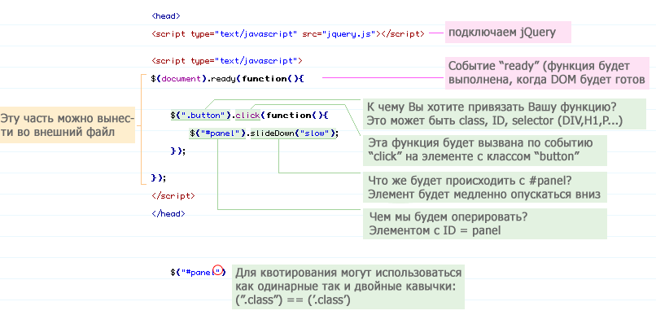

jQuery

Это библиотека JavaScript, фокусирующаяся на взаимодействии JavaScript и HTML. Библиотека jQuery помогает легко получать доступ к любому элементу DOM, обращаться к атрибутам и содержимому элементов DOM, манипулировать ими. Также библиотека jQuery предоставляет удобный API для работы с AJAX. Сейчас разработка jQuery ведётся командой jQuery во главе с Джоном Резигом
HTML был одной из первых вещей, которую Джон Резиг освоил, когда он только начал заниматься программированием. Резиг программировал на QBasic, когда один его знакомый показал ему, как создать веб-страницу (используя Angelfire), а также основы HTML. Отец подарил ему на Рождество две книги по HTML. Именно тогда, когда он только начал программировать на Visual Basic, HTML и веб-дизайн очень заинтересовали его.
Но страсть к JavaScript пришла значительно позже, примерно в 2004 году. Тогда Резиг получал степень в области компьютерных наук и работал на полставки в местной фирме Brand Logic. Он занимался дизайном сайта, в котором создавался пользовательский скроллинг. Джон был разочарован и расстроен, особенно потому, что использовал код других разработчиков, после чего решил серьёзно изучить JavaScript. Изучив, пришёл к выводам, что JavaScript — это простой, но изящный язык, который является невероятно мощным для решения многих задач. В течение следующей пары лет Джон создал множество различных JavaScript-приложений, прежде чем закончить создание jQuery. Основной целью создания jQuery Резиг видел возможность закодировать многоразовые куски кода, которые позволят упростить JavaScript и использовать их так, чтобы не беспокоиться о кросс-браузерных вопросах. Библиотека была представлена общественности на компьютерной конференции «BarCamp» в Нью-Йорке в 2006 году.
jQuery, как правило, включается в веб-страницу как один внешний JavaScript-файл:
<head>
<script src="jquery-2.2.2.min.js">
</script>
</head>
Вся работа с jQuery ведётся с помощью функции $. Если на сайте применяются другие JavaScript библиотеки, где $ может использоваться для своих нужд, то можно использовать её синоним — jQuery. Второй способ считается более правильным, а чтобы код не получался слишком громоздким, можно писать его следующим образом:
jQuery(function($) {
// здесь код скрипта, где в $ будет находиться объект, предоставляющий доступ к функциям jQuery
})
Работу с jQuery можно разделить на 2 типа:
Получение jQuery-объекта с помощью функции $(). Например, передав в неё CSS-селектор, можно получить jQuery-объект всех элементов HTML, попадающих под критерий и далее работать с ними с помощью различных методов jQuery-объекта. В случае, если метод не должен возвращать какого-либо значения, он возвращает ссылку на jQuery объект, что позволяет вести цепочку вызовов методов согласно концепции текучего интерфейса.
Вызов глобальных методов у объекта $, например, удобных итераторов по массиву.
Типичный пример манипуляции сразу несколькими узлами DOM заключается в вызове $ функции со строкой селектора CSS, что возвращает объект jQuery, содержащий некоторое количество элементов HTML-страницы. Эти элементы затем обрабатываются методами jQuery. Например,
$("div.test").add("p.quote").addClass("blue").slideDown("slow");
находит все элементы div с классом test, а также все элементы p с классом quote, и затем добавляет им всем класс blue и визуально плавно спускает вниз. Здесь методы add, addClass и slideDown возвращают ссылку на исходный объект $("div.test"), поэтому возможно вести такую цепочку.
Методы, начинающиеся с $., удобно применять для обработки глобальных объектов. Например:
$.each([1,2,3], function() {
document.write(this + 1);
});
$.ajax и соответствующие функции позволяют использовать методы AJAX. Например:
$.ajax({
type: "POST",
url: "some.php",
data: {name: 'John', location: 'Boston'},
success: function(msg){
alert( "Data Saved: " + msg );
}
});
В этом примере идет обращение к скрипту some.php с параметрами name=John&location=Boston, и полученный результат выдается в сообщении посредством alert().
Пример добавления к элементу обработчика события click с помощью jQuery:
$("a").click(function() {
alert("Hello world!");
});
В данном случае при нажатии на элемент
<a> происходит вызов
alert("Hello world!")